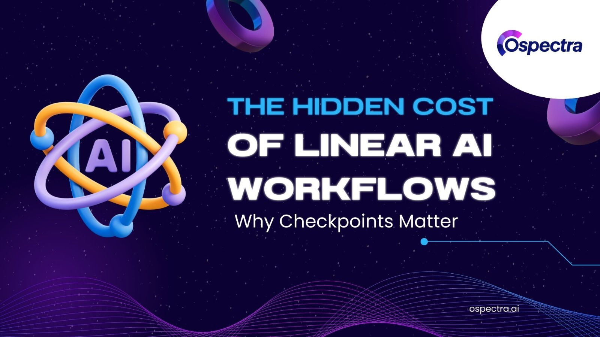

The Hidden Cost of Linear AI Workflows: Why Checkpoints Matter
Subtitle: How LangGraph enables “Time Travel” for agentic AI, cutting the re-execution tax of low-code automation
Last week, in the boardroom of a Fortune 500 retailer, the CMO asked:
"We've automated our marketing funnels using n8n. It works. Why should I spend 3x more on engineers to build it in LangGraph?"
My answer was simple: a live demonstration of what I call the “Automation Rewind.”
The Hidden Friction of Linear Logic
Most low-code/no-code (LCNC) platforms like n8n operate on a linear workflow model, much like a conveyor belt. Data flows from Point A to Point B, and if a mistake is discovered at Point A while you’re at Point C, you often have no choice but to restart the workflow from scratch.
We simulated a Marketing Funnel Agent in our lab:
- n8n approach: To change the “tone” of an ad, the entire workflow—including expensive persona research—had to be re-executed. We call this the Linear Penalty.
- LangGraph approach: Using checkpoint-based memory management, we “time-traveled” to the exact moment before the ad was written, injected a new tone, and resumed execution. Previous steps remained unchanged.
In other words: n8n makes you pay the full cost of re-execution, while LangGraph lets you make surgical edits without waste.
From Workflows to State Machines
The shift from LCNC to Full-Code isn’t just about writing code—it’s about moving from linear workflows to stateful AI agents.
When agents are agentic—capable of autonomous, multi-step decision-making—linear pipelines break under human pivots, unexpected edits, or multi-day reasoning. Corporations evaluating AI stacks must consider not just how fast node #1 is built, but how costly it is to revise node #1 when the agent is at node #10.
LangGraph vs. n8n: Addressable Memory in Action
Checkpointing transforms AI memory from a simple pass-through stream into a version-controlled database, enabling non-destructive edits and cost-efficient pivots.
| Feature | n8n (LCNC) | LangGraph (Full-Code) |
|---|---|---|
| Checkpointing | ❌ No | ✅ Yes |
| Cost of Re-execution | High | Low |
| Handling Revisions | Difficult | Easy |
| Ideal Use Case | Simple SaaS integration | High-value, complex, agentic workflows |
Simulation Examples
Linear Workflow (n8n)
def run_linear_campaign(product):
persona = llm.invoke(f"Generate persona for {product}")
ad_copy = llm.invoke(f"Generate ad for {persona}") # Step 2 depends on Step 1
email = llm.invoke(f"Generate email for {ad_copy}") # Step 3 depends on Step 2
# Problem: Changing the ad’s “tone” requires restarting the entire workflow. This is the Re-Execution Tax.
State-Graph Workflow (LangGraph)
@app.post("/pivot")
async def pivot_campaign(req: PivotRequest):
# 1. Inject new state without rerunning previous steps
graph.update_state(config, {"tone": req.new_tone}, as_node="persona")
# 2. Resume execution (Step 1 is skipped)
final_state = graph.invoke(None, config)
# Breakthrough: By updating state at a precise point, execution jumps directly to the next step.
# Past computations remain intact—saving time, cost, and computational drift.
Decision-Making Framework: Complexity vs. Persistence
Organizations can use these four criteria to select the right AI stack:
- Probability of Revision: Frequent human-in-the-loop edits? Full-Code is required for non-destructive pivots.
- Breadth of Integration: Connecting dozens of SaaS tools with simple logic? LCNC offers higher ROI.
- Cost of Computational Drift: Re-running steps may produce inconsistent results (hallucinations)? Checkpointing locks the past.
- Operational Scale: High-volume, low-complexity tasks favor LCNC; high-value, multi-step workflows require Full-Code state machines.
Additional comparison
| Feature / Dimension | n8n (LCNC) | LangGraph (Full-Code) | Notes / Impact |
|---|---|---|---|
| Checkpointing / State Snapshots | No | Yes | LangGraph allows non-destructive edits; n8n requires re-execution of previous steps. |
| Re-execution Cost | High | Low | n8n workflows are linear; changing early nodes forces full rerun. |
| Human-in-the-loop Handling | Limited | Advanced | LangGraph can pause, inject feedback, and resume without breaking workflow. |
| Error Recovery / Debugging | Manual | Automated / precise | LangGraph can roll back to last checkpoint; n8n requires rerunning workflow from scratch. |
| Computational Drift Risk | High | Low | Re-running large LLM steps in n8n can produce inconsistent outputs (hallucinations). |
| Workflow Flexibility | Medium | High | LangGraph supports complex branching, loops, and conditional flows that scale better. |
| Integration Breadth | Excellent | Good | n8n has many built-in connectors; LangGraph may require more engineering for integrations. |
| Operational Scale | High for simple tasks | High for complex tasks | n8n is cost-efficient for high-volume, repetitive automation; LangGraph excels in multi-step reasoning or agentic workflows. |
| Autonomy / Agentic Behavior | Low | High | n8n cannot maintain long-term state across sessions; LangGraph enables agents to act over multiple steps/days. |
| Debugging Visibility / Traceability | Basic logs | Full state inspection | LangGraph allows inspecting past states; n8n logs only execution history. |
| Data Persistence | Stateless between runs | Persistent, versioned state | Makes LangGraph suitable for multi-day reasoning, simulations, and experiments. |
| Concurrency / Parallel Execution | Limited | Flexible | n8n executes nodes in parallel but lacks checkpoint-aware synchronization; LangGraph can handle parallel branches with state consistency. |
| Cost Predictability | Medium | Higher initial setup, lower cumulative cost | n8n is cheap upfront but expensive to maintain/re-run; LangGraph requires engineering upfront but reduces hidden costs. |
| Learning / Experimentation Support | Low | High | LangGraph can test variations, revert, and experiment without rerunning the whole pipeline. |
| Governance / Auditability | Minimal | Strong | LangGraph state snapshots act as audit trails; useful in regulated industries (Finance, Pharma, Legal). |
| Long-term Maintenance | Moderate | Low | n8n workflows degrade as complexity grows; LangGraph supports modular, checkpointed updates. |
Conclusion
The “Time Travel” capability of frameworks like LangGraph isn’t just a neat trick—it’s an economic safeguard. It prevents the waste of linear re-processing, unlocks true agentic behavior in AI, and reduces operational risk.
Recommendation: Adopt a hybrid-tiered approach
- LCNC: For administrative automation and simple workflows.
- Full-Code State Machines: For intellectual property, customer-facing logic, and any high-value agentic AI.
When AI agents are expected to make autonomous, multi-step decisions, how they manage memory and checkpoints determines not just speed, but cost, flexibility, and resilience. LangGraph enables organizations to control these hidden costs, making agentic AI both practical and scalable.